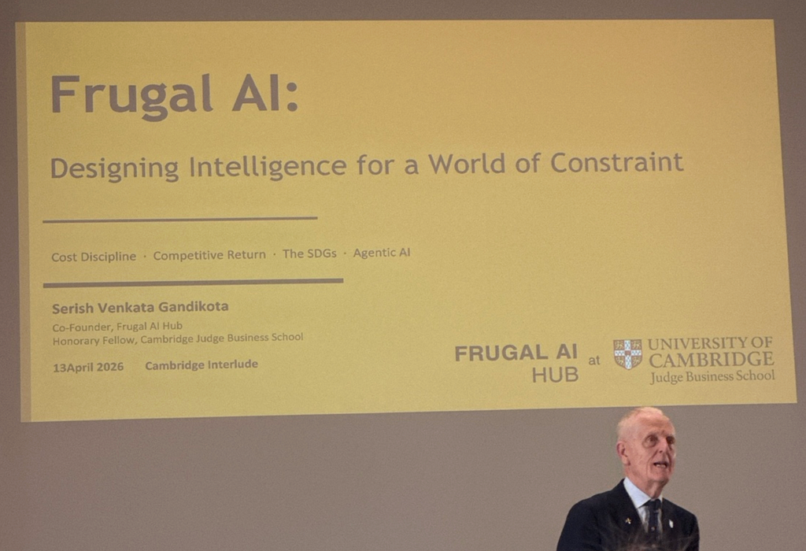

Frugal AI
ฉันชอบคำนี้ค่ะ ลองแปลออกมาให้สวยๆ ได้ว่า ‘ปัญญาประดิษฐ์แบบคุ้มค่า’

ช่วงสงกรานต์ปี 2026 ฉันเข้าเรียนคลาส
‘Frugal AI : Designing Intelligence for a World of Constraint’
ที่ Downing College — Cambridge มาค่ะ เป็นคลาส 3 ชั่วโมงเท่านั้น แต่พอเรียนจบฉันเผลอคิดเอาไปเชื่อมโยงกับชีวิตจริง
อย่างเช่น เหตุการณ์นี้
น้องในทีมพูดกับฉันว่า “งานเยอะแค่ไหนก็ได้ครับพี่ ขอแค่มี token ไม่จำกัด” ตอนที่ฟัง ฉันบอกไม่ถูกว่ารู้สึกอย่างไร ได้แต่ยิ้มแห้งๆ แต่หลังจากนั้น ฉันกลับคิดวนอยู่พักใหญ่
และฉันก็พบว่า — พอ token หมด productivity ก็ drop ทันที
มันเป็นความรู้สึกแปร่งๆ ที่เหมือน productivity ของทีมเริ่มผูกกับ resource รูปแบบใหม่
เมื่อวันนี้ AI usage กลายเป็นต้นทุน น่าจะถึงเวลาที่เราหยิบคำถามนี้มาคุยกันว่า “ควรใช้ AI ตรงไหนถึงคุ้มที่สุด?”
สำหรับฉัน โลกไม่ได้มีทรัพยากรเหลือเฟืออย่างแน่นอนอยู่แล้ว การแข่งขันไม่ได้ชนะกันด้วย AI ที่ใหญ่กว่า แต่เป็นการใช้ AI ได้คุ้มค่ากว่า และบางที Frugal AI อาจไม่ใช่การใช้ AI ให้น้อยที่สุด แต่คือการใช้ intelligence เท่าที่จำเป็น เพื่อสร้างผลลัพธ์ที่ดีที่สุด
ขอปิดท้ายด้วย Quote ของ — Serish Venkata Gandikota Visiting Fellow ที่สอนในคลาสนี้นะคะ
When you can’t throw resources at a problem,
you have to understand it.
- Serish Venkata Gandikota : Visiting Fellow, Cambridge Judge Business School
ขอให้ทุกท่านสนุกกับการอ่านค่ะ